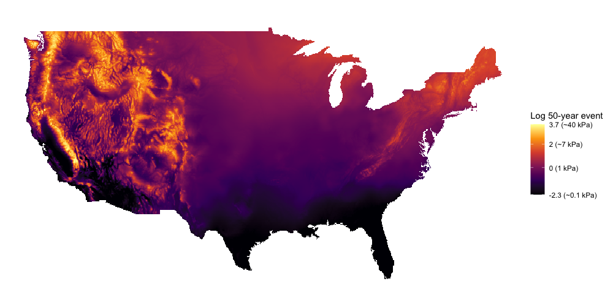

Previous ASCE snow load maps target uniform hazard loads in the form of 50-year loads (expected extreme load value observed every 50 years). The maps included large regions where a site-specific case study is required to establish the load. This project aimed to reduce the case study regions and designate design loads targeting a uniform risk i.e. reliability-targeted loads. I was extensively involved in this project, in particular I wrote a majority of the code used to collect and clean data, I helped come up with yearly maximum load distribution fitting schemes that enabled the reliable calculation of reliability-targeted loads, and I developed the high-resolution mapping technique which estimated loads between measurement locations. The details of the project are available in Bean et al. 2021. My contributions are mainly described in chapters 4, 6, and 7. Resulting maps will be included in ASCE 7-22 https://www.asce.org/asce-7/.
One of my main achievements related to this project was the conceptualization and creation of the R package remap (Wagstaff, 2021a; Wagstaff, 2021b). Creating maps of continuous variables involves estimating values between measurement locations scattered throughout a geographic region. These maps often leverage observed similarities between geographically close measurements, but may also make predictions using other geographic information such as elevation. The relationship between the available geographic information and the variable of interest can vary with location, especially when mapping large areas like the contiguous United States. A simple way to account for the changing relationship is to divide the space into different sub-regions and model the relationship at each region. The naive implementation of this approach has the side effect of making sudden changes in predictions at the borders of each region. The remap R package implements a novel regional border smoothing method that allows for the formation of a continuous map built with regional model (Figure 2). Model accuracy is substantially improved with a variety of mapping techniques using remap over mapping with a global model.
Bean, B., Maguire, M., Sun, Y., Wagstaff, J., Al-Rubaye, S.A., Wheeler, J., Jarman, S., & Rogers, M. (2021). The 2020 National snow load study (paper 276). Utah State University, Mathematics and Statistics Faculty Publications. https://doi.org/10.26077/200k-pr86
Wagstaff, J. S.. (2021a). Regionalized models with spatially continuous predictions at the borders (Publication No. 8065) [Master's thesis, Utah State University]. All Graduate Theses and Dissertations. https://digitalcommons.usu.edu/etd/8065/
Wagstaff, J. (2021b). remap: regional spatial modeling with continuous borders. The Comprehensive R Archive Network (CRAN). https://github.com/jadonwagstaff/remap